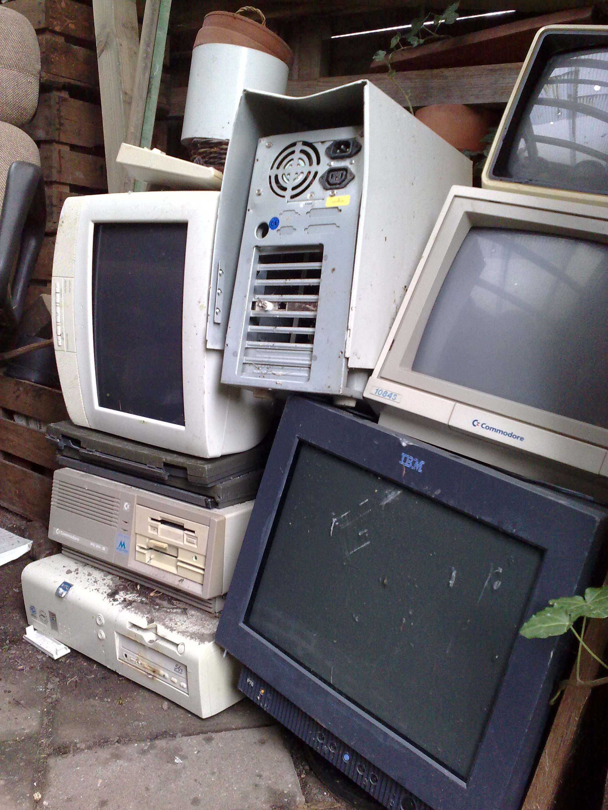
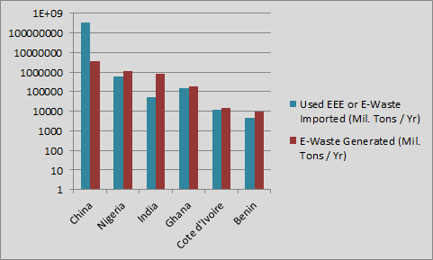

What is E-Waste?
The term “E-waste” is an informal name for electronic devices, parts, products, etc. that have approached the end of their usefulness. Computers, televisions, copiers, stereos, VCRs, fax machines, and car batteries for example, that no longer work, or are no longer useful, are considered “E-waste.”

Why is E-Waste Harmful?
In 2009, 430 million new consumer electronics were sold in the U.S., while 5 million tons were in storage, and 2.37 million tons were ready for end of life management. Of the 2.37 million tons of E-waste in 2009, only about 12.5% was recycled. That leaves 2,073,750 tons, or 4,147,500,000 pounds of broken or useless electronics unaccounted for. It is what is done with this 4,147,500,000 pounds of unaccounted for E-waste that makes it so harmful to not only the environment, but to the people who live in third world countries. These statistics are in the U.S. alone. Worldwide 20 to 50 million metric tons of E-waste are disposed each year in landfills or incinerators, which can release harmful toxins into the air.
